Wing CountrySauces and dips (22)
Cayenne and butter, lemon pepper, mumbo, mild sauce, gochujang, ranch, blue cheese.
Cayenne and butter (1)
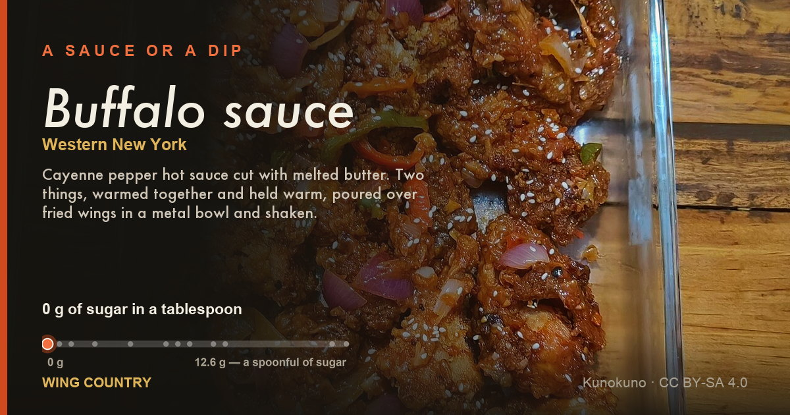
Buffalo saucewing sauce, hot sauce and butter, medium
Cayenne pepper hot sauce cut with melted butter. Two things, warmed together and held warm, poured over fried wings in a metal bowl and shaken.
Citrus and pepper (2)
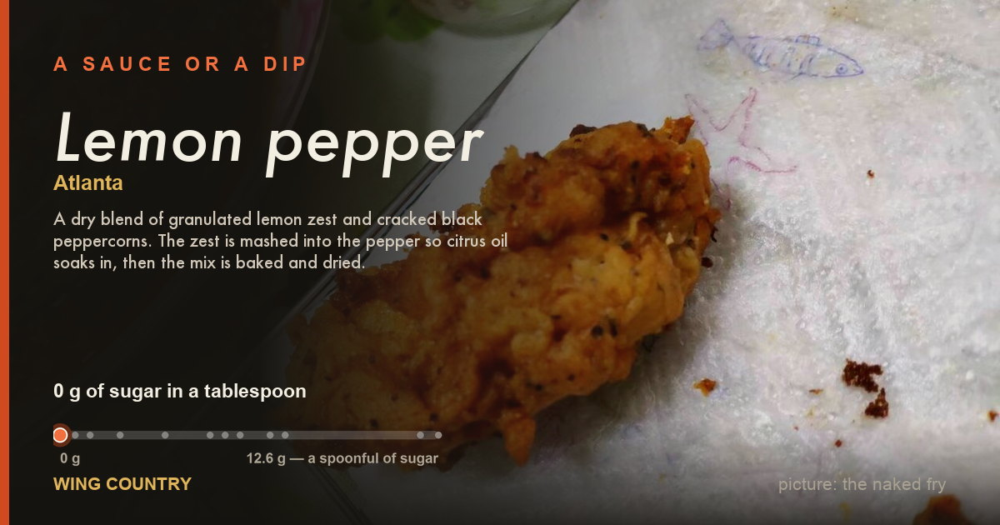
Lemon pepperlemon pepper seasoning, LP
A dry blend of granulated lemon zest and cracked black peppercorns. The zest is mashed into the pepper so citrus oil soaks in, then the mix is baked and dried.
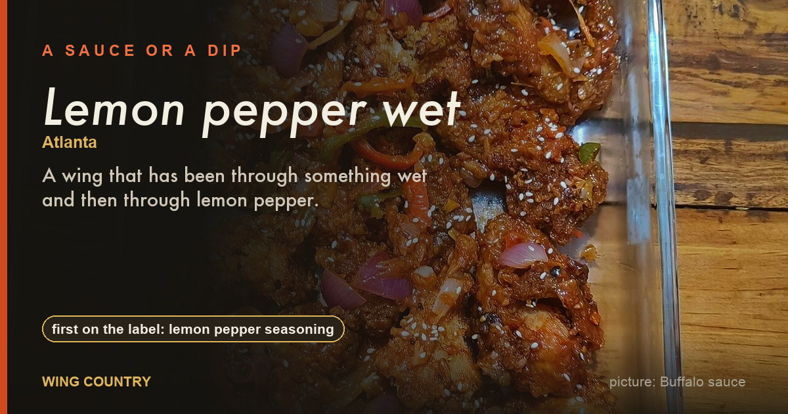
Lemon pepper wetLP wet, lemon pepper wet wings
A wing that has been through something wet and then through lemon pepper.
Dairy dips (3)
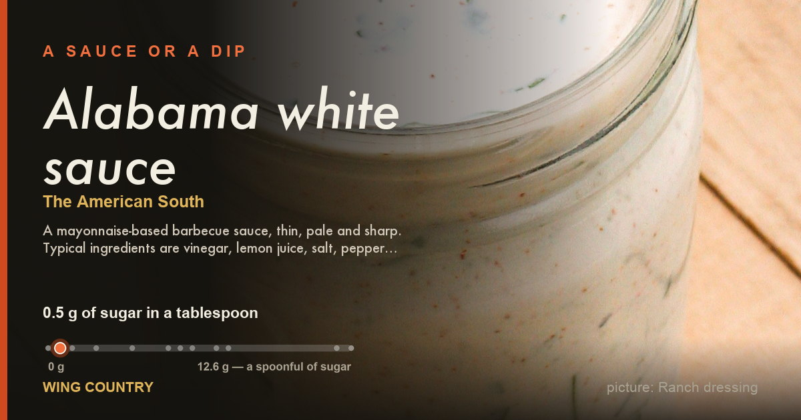
Alabama white saucewhite barbecue sauce, white sauce
A mayonnaise-based barbecue sauce, thin, pale and sharp. Typical ingredients are vinegar, lemon juice, salt, pepper, cayenne pepper and horseradish stirred into mayonnaise.
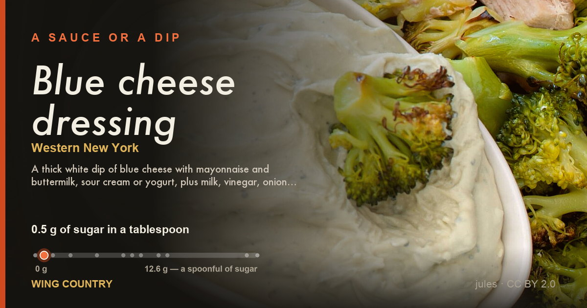
Blue cheese dressingbleu cheese, blue cheese, chunky blue
A thick white dip of blue cheese with mayonnaise and buttermilk, sour cream or yogurt, plus milk, vinegar, onion powder and garlic powder.
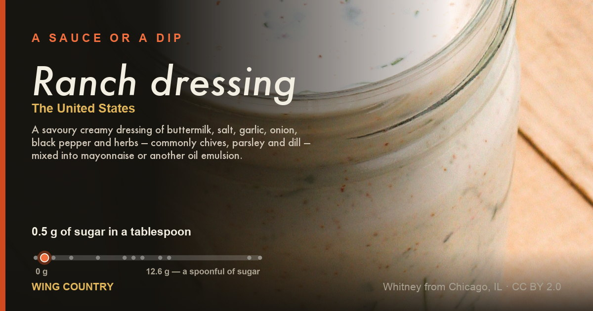
Ranch dressingranch, Hidden Valley Ranch
A savoury creamy dressing of buttermilk, salt, garlic, onion, black pepper and herbs — commonly chives, parsley and dill — mixed into mayonnaise or another oil emulsion.
Dry rub (2)
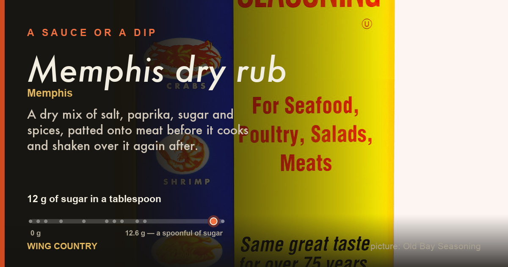
Memphis dry rubdry rub, Memphis rub, dry
A dry mix of salt, paprika, sugar and spices, patted onto meat before it cooks and shaken over it again after.
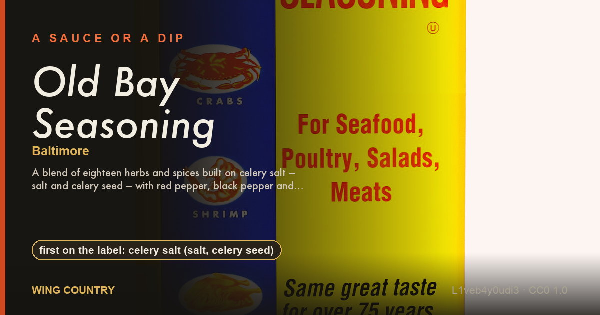
Old Bay SeasoningOld Bay, the yellow can
A blend of eighteen herbs and spices built on celery salt — salt and celery seed — with red pepper, black pepper and paprika.
Herb and garlic (1)
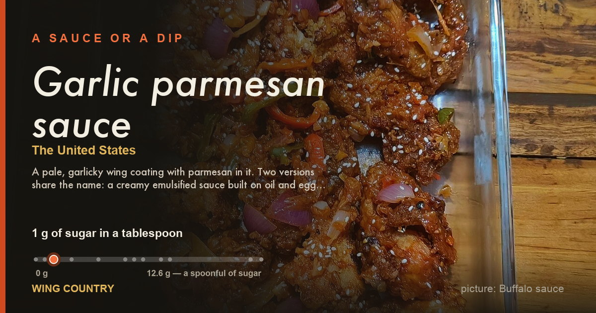
Garlic parmesan saucegarlic parm, garlic parmesan
A pale, garlicky wing coating with parmesan in it. Two versions share the name: a creamy emulsified sauce built on oil and egg yolk with parmesan powder, sold bottled; and a kitchen mix of melted butter, minced garlic…
Other (6)
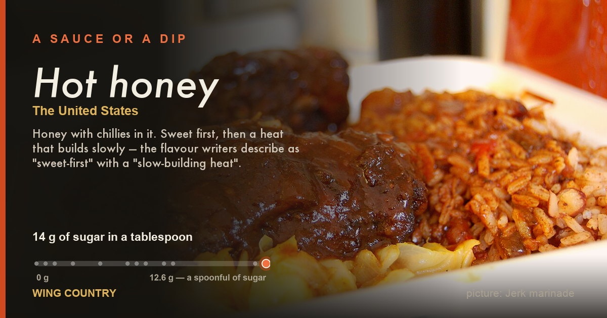
Hot honeychili honey, spicy honey
Honey with chillies in it. Sweet first, then a heat that builds slowly — the flavour writers describe as "sweet-first" with a "slow-building heat".
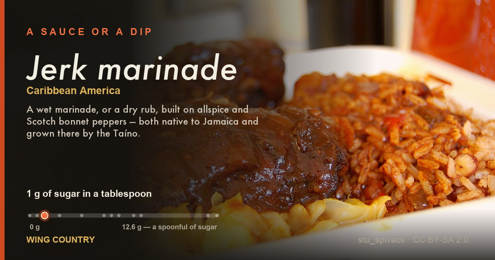
Jerk marinadejerk seasoning, jerk spice, Jamaican jerk spice
A wet marinade, or a dry rub, built on allspice and Scotch bonnet peppers — both native to Jamaica and grown there by the Taíno.
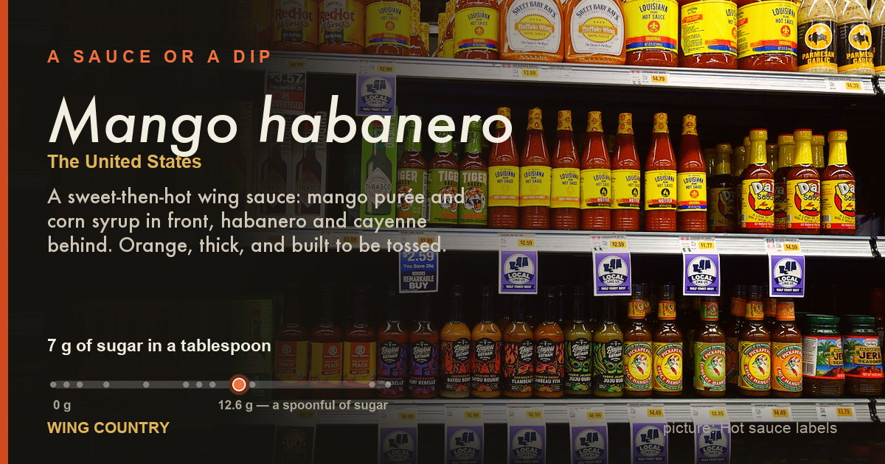
Mango habaneromango hab, sweet heat
A sweet-then-hot wing sauce: mango purée and corn syrup in front, habanero and cayenne behind. Orange, thick, and built to be tossed.
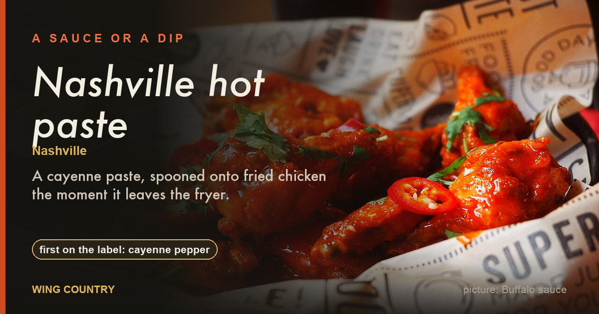
Nashville hot pastehot oil, the paste, cayenne paste
A cayenne paste, spooned onto fried chicken the moment it leaves the fryer.
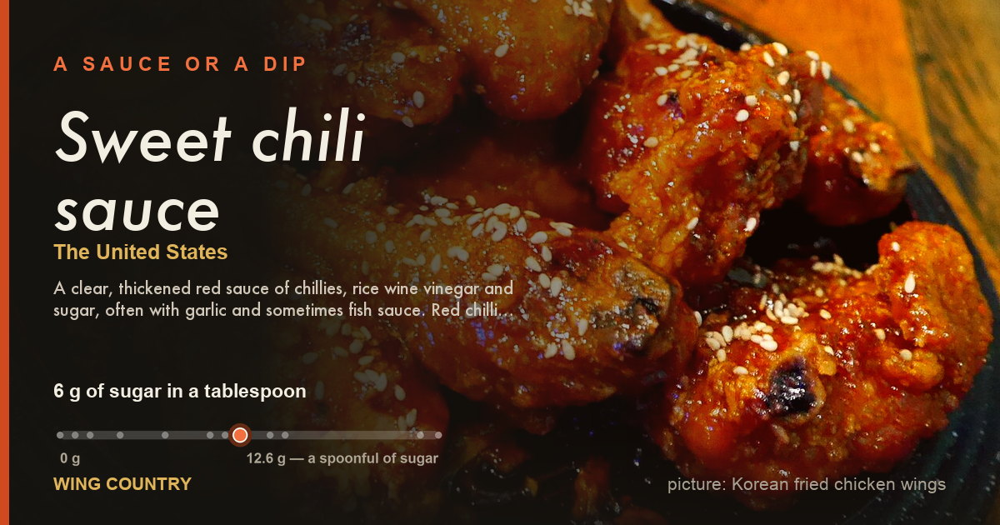
Sweet chili saucesweet Thai chili sauce, nam chim kai, น้ำจิ้มไก่
A clear, thickened red sauce of chillies, rice wine vinegar and sugar, often with garlic and sometimes fish sauce. Red chilli peppers — Fresno, Thai or red jalapeños — give it its flecks.
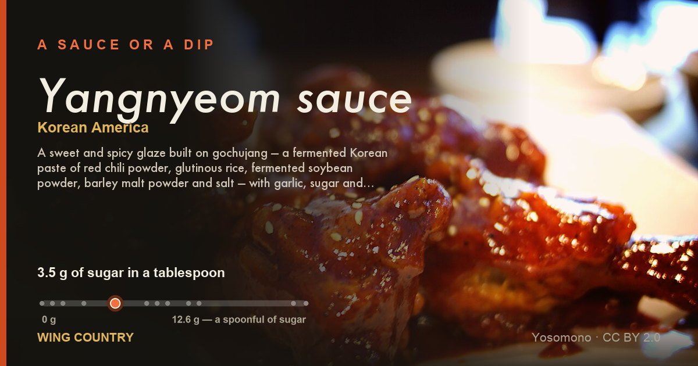
Yangnyeom sauceyangnyeom, seasoned sauce, sweet and spicy
A sweet and spicy glaze built on gochujang — a fermented Korean paste of red chili powder, glutinous rice, fermented soybean powder, barley malt powder and salt — with garlic, sugar and other seasonings.
Soy and sweet (2)
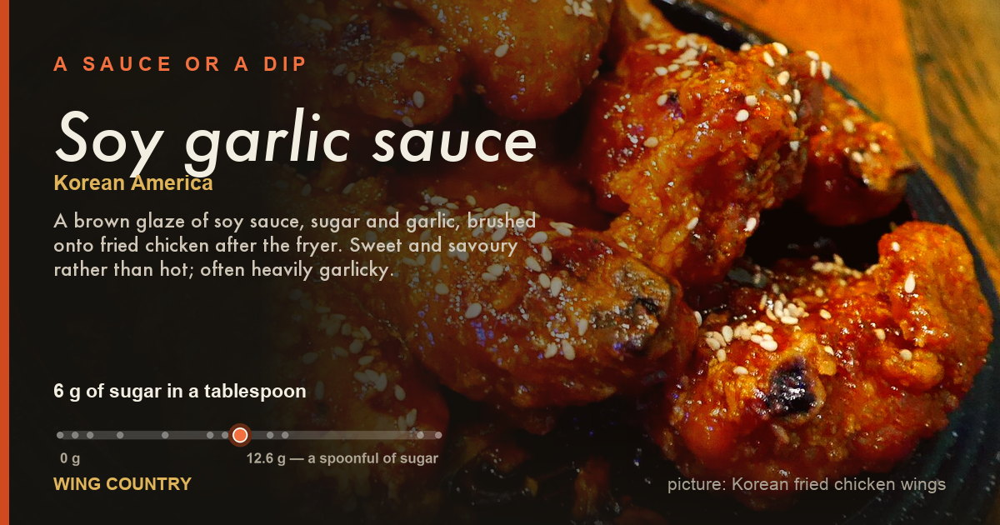
Soy garlic sauceganjang chicken sauce, ganjang-chikin sauce, soy garlic
A brown glaze of soy sauce, sugar and garlic, brushed onto fried chicken after the fryer. Sweet and savoury rather than hot; often heavily garlicky.
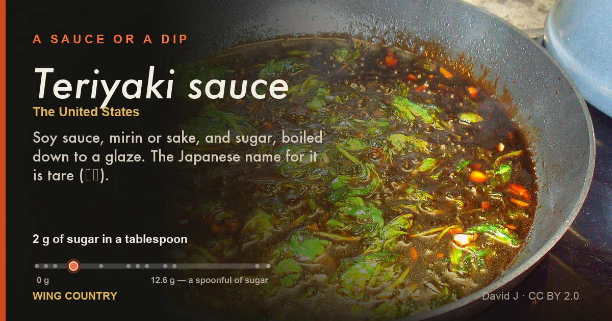
Teriyaki sauceteriyaki, tare
Soy sauce, mirin or sake, and sugar, boiled down to a glaze. The Japanese name for it is tare (タレ).
Sweet and red (3)
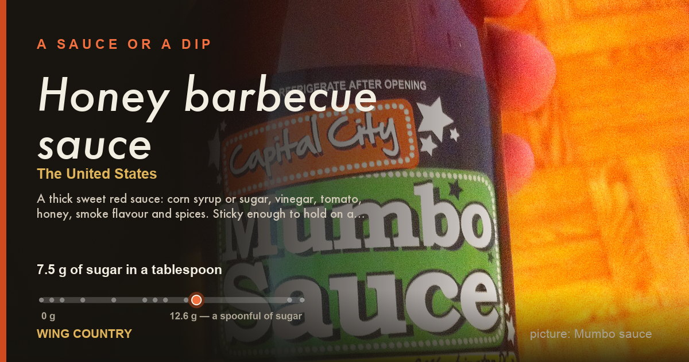
Honey barbecue saucehoney BBQ, honey barbeque
A thick sweet red sauce: corn syrup or sugar, vinegar, tomato, honey, smoke flavour and spices. Sticky enough to hold on a wing without butter, sweet enough to caramelise under a broiler or on a grill.
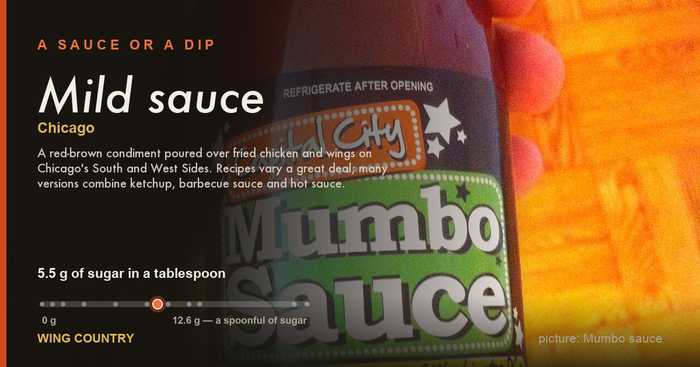
Mild sauceChicago mild sauce
A red-brown condiment poured over fried chicken and wings on Chicago's South and West Sides. Recipes vary a great deal; many versions combine ketchup, barbecue sauce and hot sauce.
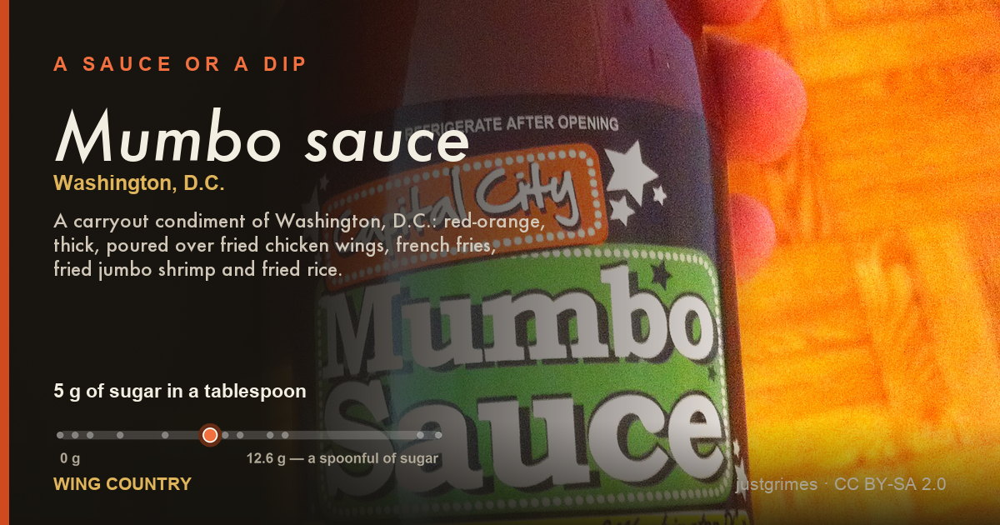
Mumbo saucemambo sauce, Mumbo® Sauce
A carryout condiment of Washington, D.C.: red-orange, thick, poured over fried chicken wings, french fries, fried jumbo shrimp and fried rice.
Vinegar and pepper (2)
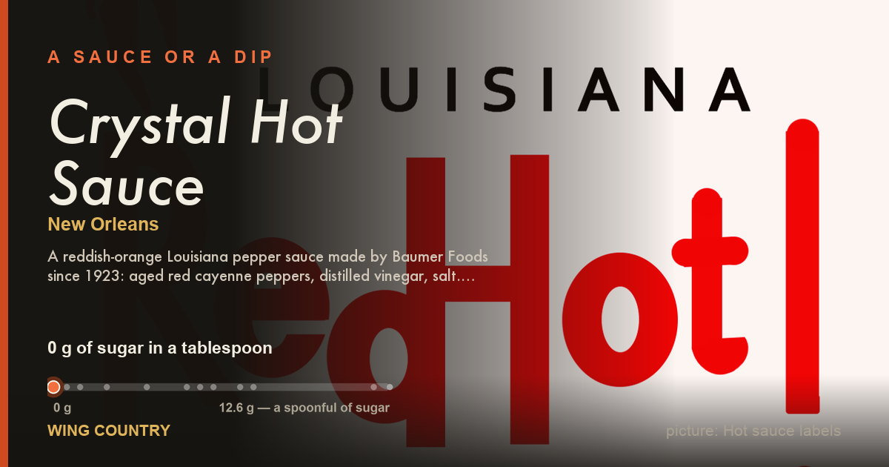
Crystal Hot SauceCrystal, Crystal Louisiana's Pure Hot Sauce
A reddish-orange Louisiana pepper sauce made by Baumer Foods since 1923: aged red cayenne peppers, distilled vinegar, salt. Three ingredients on the 6 fl oz bottle; the gallon jug adds xanthan gum.
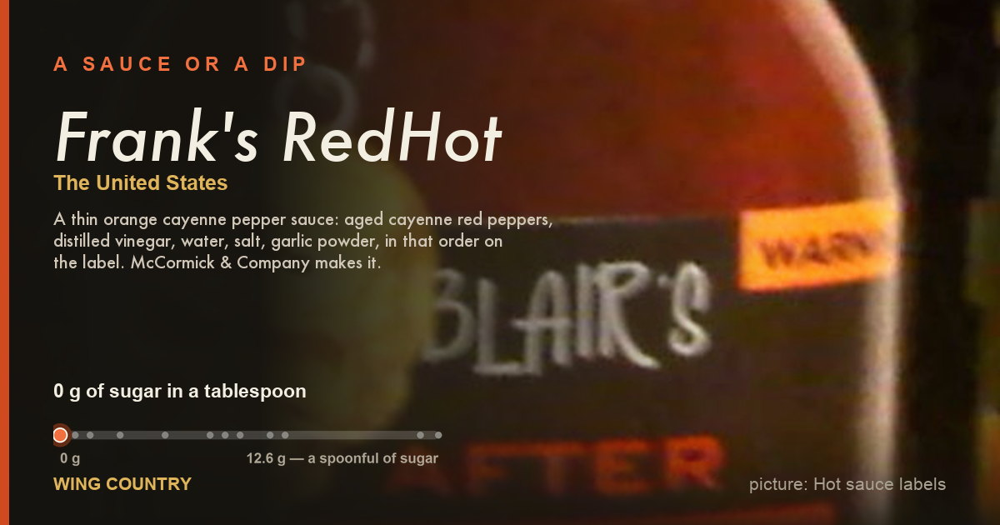
Frank's RedHotFrank's, Frank's RedHot Original Cayenne Pepper Sauce
A thin orange cayenne pepper sauce: aged cayenne red peppers, distilled vinegar, water, salt, garlic powder, in that order on the label. McCormick & Company makes it.